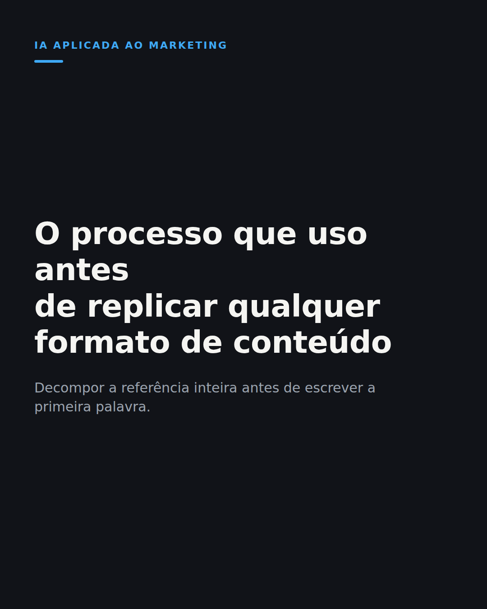

O processo que uso pra decompor qualquer post ou reels em estrutura replicável antes de criar algo parecido
1. Copie o texto
Ferramenta de IA virou commodity em 2026. A diferença entre quem usa bem e quem usa mal está no processo antes de abrir o prompt.
Antes de criar qualquer carrossel ou reels parecido com uma referência, eu decomponho a peça original inteira primeiro.
Ambiente, ritmo de edição, tipo de gancho, estrutura de bullet a bullet: cada parte vira uma linha separada antes de eu escrever uma palavra do meu conteúdo.
Sem esse passo, a IA generativa só reescreve a superfície. Troca palavra, mantém o vício, repete a mesma estrutura que já cansou o feed.
Decompor primeiro me mostra qual parte da referência funcionou de verdade. Só essa parte eu reaproveito, com o meu tema.
No começo eu pulava direto pra tela em branco e travava, tentando parecer diferente sem entender por que o original funcionava.
Levou meses pra virar hábito. Hoje é o primeiro passo antes de qualquer peça nova, seja minha ou de um cliente da agência.
Qual conteúdo você já tentou replicar sem entender por que ele funcionava?
#marketingdeconteudo #iamarketing #copywriting
2. Baixe o visual

Baixar imagem